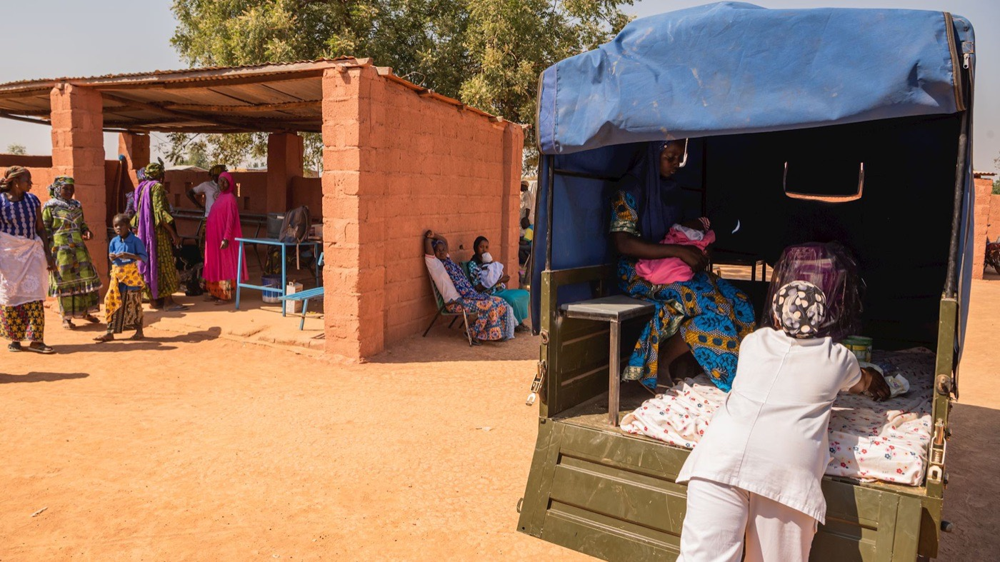

- Nisab or et argent mis à jour chaque lundi
- Calcul dans votre navigateur, aucune donnée transmise
- 100 € de zakat vous coûtent 34 € après réduction d'impôt
Et après le calcul ?
Versez en une fois ou chaque mois ; cochez « Zakat » lors du don.
Fonds zakat séparé, 100 % distribué aux huit catégories d'ayants droit.
Verser au fonds Zakat al MaalReçu fiscal immédiat : 66 % du montant déductible. Où va votre zakat
Comment calculer sa zakat al maal ?
La zakat al maal (zakât al-mâl) est l'aumône obligatoire sur le patrimoine, troisième pilier de l'islam. Son calcul tient en quatre étapes, que le calculateur ci-dessus reproduit ligne par ligne.
Additionnez vos biens zakatables
Liquidités et épargne, or et argent, actions et placements, créances sûres, loyers épargnés, stocks et trésorerie professionnelle.
Retirez vos dettes exigibles
Ce que vous devez payer dans l'année : mensualités, impôts dus, factures, crédit à la consommation.
Comparez au nisab
Si le résultat dépasse le nisab, et l'a dépassé pendant toute l'année lunaire, la zakat est due.
Versez 2,5 %
Sur la totalité du patrimoine net, pas seulement sur la part qui dépasse le nisab.
Exemple : 12 000 € d'épargne, 2 500 € d'or, 4 000 € de placements, 1 500 € de dettes à régler. Patrimoine net : 17 000 €, au-dessus du nisab. Zakat due : 17 000 × 2,5 % = 425 €, soit 144,50 € après réduction d'impôt.
Nisab or ou nisab argent : lequel choisir ?
Le nisab (on écrit aussi nissab) est le seuil de richesse à partir duquel la zakat devient due. Il a été fixé par le Prophète en poids de métal : 85 g d'or ou 595 g d'argent. Comme les cours de l'or et de l'argent ont divergé, les deux valeurs sont aujourd'hui très différentes : au 18 octobre 2026, 9 900 € pour l'or et 1 154 € pour l'argent. La majorité des savants contemporains recommandent la base argent, plus basse, parce qu'elle fait entrer plus de personnes dans l'obligation et profite donc davantage aux pauvres. La base or reste admise, notamment pour qui ne possède que de l'or. Nous actualisons les deux chaque lundi.

Qu'est-ce qui entre dans le calcul de la zakat ?
Liquidités et épargne
Comptes courants, livrets, espèces, à 100 % de leur solde le jour du calcul.
Or et argent
Lingots, pièces, bijoux non portés : au cours du jour. Les bijoux portés sont exemptés selon plusieurs écoles.
Placements
Actions, fonds, assurance-vie rachetable, cryptomonnaies : valeur de marché du jour.
Immobilier
Résidence principale exclue. Pour un bien loué, seuls les loyers encaissés et encore épargnés comptent ; un bien acheté pour être revendu compte en entier.
Créances
Les sommes qu'on vous doit et que vous êtes sûr de récupérer. Une créance douteuse est comptée l'année où elle est remboursée.
Entreprise
Stocks destinés à la vente et trésorerie, pas les machines, les locaux ni les véhicules.
Cas particuliers : épargne salariale, PEL, retraite, crypto
L'épargne salariale (PEE, PERCO) entre dans le calcul dès qu'elle est débloquée ou déblocable, même avec pénalité ; un plan strictement bloqué est compté l'année de son déblocage. Le PEL et le livret A sont des liquidités : leur solde compte à 100 %. L'épargne retraite récupérable est zakatable ; une pension non encore versée ne l'est pas. Les cryptomonnaies sont traitées comme des liquidités à leur valeur du jour. Les dettes à déduire sont celles exigibles dans l'année : pour un crédit immobilier, la plupart des avis déduisent les douze prochaines mensualités, pas le capital restant. En cas de doute, le guide détaillé traite chaque situation, et un imam reste votre meilleur conseil.

Quand payer sa zakat ? Le hawl
La zakat est due une fois par année lunaire, à la date anniversaire du jour où votre patrimoine a dépassé le nisab pour la première fois : c'est le hawl. Si vous avez oublié cette date, choisissez-en une et gardez-la : beaucoup de donateurs retiennent une date du Ramadan, qui commence le 8 février 2027. Vous pouvez verser en une fois ou étaler par prélèvement mensuel, à condition que le total soit réglé avant le hawl suivant. Une zakat versée en avance est valable.

Zakat et réduction d'impôt
Muslim Hands France est une association d'intérêt général : votre zakat ouvre droit à une réduction d'impôt sur le revenu de 66 %, dans la limite de 20 % du revenu imposable. 100 € de zakat vous coûtent 34 € ; les 425 € de l'exemple reviennent à 144,50 €. Le reçu fiscal est envoyé par e-mail immédiatement après le don. Tout savoir sur la déduction fiscale.
Questions fréquentes sur le calcul de la zakat
Nisab or ou nisab argent : lequel choisir ?
La majorité des savants contemporains recommandent la base argent (595 g, soit 1 154 € au 18 octobre 2026), plus basse, donc plus favorable aux bénéficiaires. La base or (85 g, soit 9 900 €) reste admise. Le calculateur propose les deux.
Dois-je inclure ma résidence principale ?
Non. Les biens d'usage (logement habité, voiture, meubles, bijoux portés selon certains avis) ne sont pas zakatables. Un bien locatif n'est pas compté pour sa valeur : seuls les loyers encaissés et encore épargnés entrent dans le calcul.
Et l'épargne salariale, le PEL, l'assurance-vie, les cryptomonnaies ?
Ils entrent dans le calcul à leur valeur du jour dès qu'ils sont disponibles ou récupérables, même avec pénalité. Les cryptomonnaies sont traitées comme des liquidités. Un plan bloqué sans possibilité de retrait est compté l'année où il se débloque.
Faut-il déduire ses dettes ?
Oui, les dettes exigibles dans l'année : loyer ou mensualité du mois, crédit à la consommation, impôts dus, factures. Pour un crédit immobilier, on déduit en général les douze prochaines mensualités, pas le capital restant dû.
Quand dois-je payer ma zakat ?
À la date anniversaire lunaire (le hawl) du jour où votre patrimoine a dépassé le nisab pour la première fois. Beaucoup choisissent une date fixe du Ramadan pour s'en souvenir. Vous pouvez aussi l'étaler par prélèvement mensuel.
Mon calcul est-il enregistré ?
Non. Le calcul se fait dans votre navigateur, aucune donnée n'est envoyée ni conservée. Vous pouvez recommencer autant de fois que vous le souhaitez.
La zakat versée est-elle déductible des impôts ?
Oui. Muslim Hands France est d'intérêt général : 66 % du montant est déductible de l'impôt sur le revenu. 100 € de zakat vous coûtent 34 €. Le reçu fiscal est envoyé immédiatement par e-mail.

Votre zakat, intégralement distribuée.
Orphelins, familles sans ressources, victimes de crises : 100 % de la zakat va aux huit catégories d'ayants droit.
Verser ma zakat